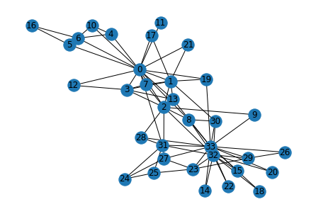
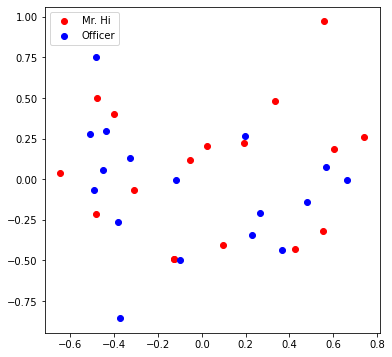
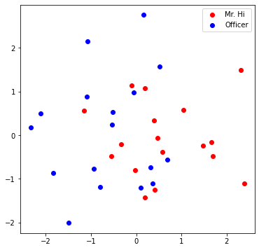

Graph Basics#
import networkx as nx
G = nx.karate_club_graph()
type(G) #undirected graph
networkx.classes.graph.Graph
import matplotlib.pyplot as plt
nx.draw(G , with_labels =True)

def average_degree(num_edges, num_nodes):
# TODO: Implement this function that takes number of edges
# and number of nodes, and returns the average node degree of
# the graph. Round the result to nearest integer (for example
# 3.3 will be rounded to 3 and 3.7 will be rounded to 4)
avg_degree = 0
############# Your code here ############
avg_degree = round(2 * num_edges / num_nodes)
#########################################
return avg_degree
num_edges = G.number_of_edges()
num_nodes = G.number_of_nodes()
avg_degree = average_degree(num_edges, num_nodes)
print("Average degree of karate club network is {}".format(avg_degree))
Average degree of karate club network is 5
import numpy as np
def average_clustering_coefficient(G):
# TODO: Implement this function that takes a nx.Graph
# and returns the average clustering coefficient. Round
# the result to 2 decimal places (for example 3.333 will
# be rounded to 3.33 and 3.7571 will be rounded to 3.76)
avg_cluster_coef = 0
############# Your code here ############
## Note:
## 1: Please use the appropriate NetworkX clustering function
avg_cluster_coef = round(np.array(list(nx.clustering(G).items())).sum(axis= 0)[1]/34 , 2)
#########################################
return avg_cluster_coef
avg_cluster_coef = average_clustering_coefficient(G)
print("Average clustering coefficient of karate club network is {}".format(avg_cluster_coef))
Average clustering coefficient of karate club network is 0.57
def one_iter_pagerank(G, beta, r0, node_id):
# TODO: Implement this function that takes a nx.Graph, beta, r0 and node id.
# The return value r1 is one interation PageRank value for the input node.
# Please round r1 to 2 decimal places.
r1 = 0
############# Your code here ############
## Note:
## 1: You should not use nx.pagerank
for neighbour in G.neighbors(node_id) :
r1 += beta*(r0 / G.degree[neighbour])
r1 += (1- beta)/G.number_of_nodes()
r1 = round(r1 , 2)
#########################################
return r1
beta = 0.8
r0 = 1 / G.number_of_nodes()
node = 0
r1 = one_iter_pagerank(G, beta, r0, node)
print("The PageRank value for node 0 after one iteration is {}".format(r1))
The PageRank value for node 0 after one iteration is 0.13
def closeness_centrality(G, node=5):
# TODO: Implement the function that calculates closeness centrality
# for a node in karate club network. G is the input karate club
# network and node is the node id in the graph. Please round the
# closeness centrality result to 2 decimal places.
closeness = 0
## Note:
## 1: You can use networkx closeness centrality function.
## 2: Notice that networkx closeness centrality returns the normalized
## closeness directly, which is different from the raw (unnormalized)
## one that we learned in the lecture.
closeness = nx.closeness_centrality(G, u=node)
closeness /= len(nx.node_connected_component(G, node)) - 1
closeness = round(closeness, 2)
#########################################
return closeness
node = 0
closeness = closeness_centrality(G, node=node)
print("The node 5 has closeness centrality {}".format(closeness))
The node 5 has closeness centrality 0.02
Working with Tensors#
import torch
print(torch.__version__)
1.12.0+cu116
torch.cuda.is_available()
True
torch.cuda.device_count()
1
torch.cuda.current_device()
0
torch.cuda.device(0)
<torch.cuda.device at 0x217761ff730>
# Generate 3 x 4 tensor with all ones
ones = torch.ones(3, 4)
print(ones)
# Generate 3 x 4 tensor with all zeros
zeros = torch.zeros(3, 4)
print(zeros)
# Generate 3 x 4 tensor with random values on the interval [0, 1)
random_tensor = torch.rand(3, 4)
print(random_tensor)
# Get the shape of the tensor
print(ones.shape)
tensor([[1., 1., 1., 1.],
[1., 1., 1., 1.],
[1., 1., 1., 1.]])
tensor([[0., 0., 0., 0.],
[0., 0., 0., 0.],
[0., 0., 0., 0.]])
tensor([[0.8529, 0.7187, 0.1464, 0.8359],
[0.3538, 0.9039, 0.4389, 0.4732],
[0.1385, 0.6843, 0.0570, 0.2340]])
torch.Size([3, 4])
zeros = torch.zeros(3, 4, dtype=torch.float32)
print(zeros.dtype)
# Change the tensor dtype to 64-bit integer
zeros = zeros.type(torch.long)
print(zeros.dtype)
torch.float32
torch.int64
def graph_to_edge_list(G):
# TODO: Implement the function that returns the edge list of
# an nx.Graph. The returned edge_list should be a list of tuples
# where each tuple is a tuple representing an edge connected
# by two nodes.
edge_list = []
############# Your code here ############
edge_list = nx.edges(G)
#########################################
return edge_list
def edge_list_to_tensor(edge_list):
# TODO: Implement the function that transforms the edge_list to
# tensor. The input edge_list is a list of tuples and the resulting
# tensor should have the shape [2 x len(edge_list)].
############# Your code here ############
edge_index = torch.tensor(np.array(list(edge_list))).T
#########################################
return edge_index
pos_edge_list = graph_to_edge_list(G)
pos_edge_index = edge_list_to_tensor(pos_edge_list)
print("The pos_edge_index tensor has shape {}".format(pos_edge_index.shape))
print("The pos_edge_index tensor has sum value {}".format(torch.sum(pos_edge_index)))
The pos_edge_index tensor has shape torch.Size([2, 78])
The pos_edge_index tensor has sum value 2535
import random
def sample_negative_edges(G, num_neg_samples):
# TODO: Implement the function that returns a list of negative edges.
# The number of sampled negative edges is num_neg_samples. You do not
# need to consider the corner case when the number of possible negative edges
# is less than num_neg_samples. It should be ok as long as your implementation
# works on the karate club network. In this implementation, self loops should
# not be considered as either a positive or negative edge. Also, notice that
# the karate club network is an undirected graph, if (0, 1) is a positive
# edge, do you think (1, 0) can be a negative one?
neg_edge_list = []
############# Your code here ############
pos_edge_list = graph_to_edge_list(G)
for node1 in G.nodes():
for node2 in G.nodes():
if node1 < node2:
if (node1, node2) not in pos_edge_list:
neg_edge_list.append((node1, node2))
neg_edge_list = random.sample(neg_edge_list, num_neg_samples)
#########################################
return neg_edge_list
# Sample 78 negative edges
neg_edge_list = sample_negative_edges(G, len(pos_edge_list))
# Transform the negative edge list to tensor
neg_edge_index = edge_list_to_tensor(neg_edge_list)
print("The neg_edge_index tensor has shape {}".format(neg_edge_index.shape))
# Which of following edges can be negative ones?
edge_1 = (7, 1)
edge_2 = (1, 33)
edge_3 = (33, 22)
edge_4 = (0, 4)
edge_5 = (4, 2)
############# Your code here ############
## Note:
## 1: For each of the 5 edges, print whether it can be negative edge
pos_edge_list = graph_to_edge_list(G)
for edge in [edge_1, edge_2, edge_3, edge_4, edge_5]:
if edge in pos_edge_list:
print("No")
else:
print("Yes")
#########################################
The neg_edge_index tensor has shape torch.Size([2, 78])
No
Yes
No
No
Yes
Node Embedding Learning#
import torch
import torch.nn as nn
import matplotlib.pyplot as plt
from sklearn.decomposition import PCA
print(torch.__version__)
<frozen importlib._bootstrap>:228: RuntimeWarning: scipy._lib.messagestream.MessageStream size changed, may indicate binary incompatibility. Expected 56 from C header, got 64 from PyObject
1.12.0+cu116
# Initialize an embedding layer
# Suppose we want to have embedding for 4 items (e.g., nodes)
# Each item is represented with 8 dimensional vector
emb_sample = nn.Embedding(num_embeddings=4, embedding_dim=8)
print('Sample embedding layer: {}'.format(emb_sample))
Sample embedding layer: Embedding(4, 8)
# Select an embedding in emb_sample
id = torch.LongTensor([1])
print(emb_sample(id))
# Select multiple embeddings
ids = torch.LongTensor([1, 3])
print(emb_sample(ids))
# Get the shape of the embedding weight matrix
shape = emb_sample.weight.data.shape
print(shape)
# Overwrite the weight to tensor with all ones
emb_sample.weight.data = torch.ones(shape)
# Let's check if the emb is indeed initilized
ids = torch.LongTensor([0,1,2, 3])
print(emb_sample(ids))
tensor([[ 0.2198, -1.0875, 0.5022, 1.3525, -2.5076, 0.3254, -1.3118, -0.4964]],
grad_fn=<EmbeddingBackward0>)
tensor([[ 0.2198, -1.0875, 0.5022, 1.3525, -2.5076, 0.3254, -1.3118, -0.4964],
[-0.4152, -0.4850, 0.5058, 0.4264, 1.1433, -1.0102, -0.4798, 0.9198]],
grad_fn=<EmbeddingBackward0>)
torch.Size([4, 8])
tensor([[1., 1., 1., 1., 1., 1., 1., 1.],
[1., 1., 1., 1., 1., 1., 1., 1.],
[1., 1., 1., 1., 1., 1., 1., 1.],
[1., 1., 1., 1., 1., 1., 1., 1.]], grad_fn=<EmbeddingBackward0>)
# Please do not change / reset the random seed
torch.manual_seed(1)
def create_node_emb(num_node=34, embedding_dim=16):
# TODO: Implement this function that will create the node embedding matrix.
# A torch.nn.Embedding layer will be returned. You do not need to change
# the values of num_node and embedding_dim. The weight matrix of returned
# layer should be initialized under uniform distribution.
emb = None
############# Your code here ############
emb = nn.Embedding(num_embeddings=num_node, embedding_dim=embedding_dim)
emb.weight.data = torch.rand(num_node,embedding_dim)
#########################################
return emb
emb = create_node_emb()
ids = torch.LongTensor([0, 3])
# Print the embedding layer
print("Embedding: {}".format(emb))
# An example that gets the embeddings for node 0 and 3
print(emb(ids))
Embedding: Embedding(34, 16)
tensor([[0.2114, 0.7335, 0.1433, 0.9647, 0.2933, 0.7951, 0.5170, 0.2801, 0.8339,
0.1185, 0.2355, 0.5599, 0.8966, 0.2858, 0.1955, 0.1808],
[0.7486, 0.6546, 0.3843, 0.9820, 0.6012, 0.3710, 0.4929, 0.9915, 0.8358,
0.4629, 0.9902, 0.7196, 0.2338, 0.0450, 0.7906, 0.9689]],
grad_fn=<EmbeddingBackward0>)
def visualize_emb(emb):
X = emb.weight.data.numpy()
pca = PCA(n_components=4)
components = pca.fit_transform(X)
plt.figure(figsize=(6, 6))
club1_x = []
club1_y = []
club2_x = []
club2_y = []
for node in G.nodes(data=True):
if node[1]['club'] == 'Mr. Hi':
club1_x.append(components[node[0]][2])
club1_y.append(components[node[0]][3])
else:
club2_x.append(components[node[0]][2])
club2_y.append(components[node[0]][3])
plt.scatter(club1_x, club1_y, color="red", label="Mr. Hi")
plt.scatter(club2_x, club2_y, color="blue", label="Officer")
plt.legend()
plt.show()
# Visualize the initial random embeddding
visualize_emb(emb)

from torch.optim import SGD
import torch.nn as nn
def accuracy(pred, label):
# TODO: Implement the accuracy function. This function takes the
# pred tensor (the resulting tensor after sigmoid) and the label
# tensor (torch.LongTensor). Predicted value greater than 0.5 will
# be classified as label 1. Else it will be classified as label 0.
# The returned accuracy should be rounded to 4 decimal places.
# For example, accuracy 0.82956 will be rounded to 0.8296.
accu = 0.0
############# Your code here ############
accu = round(np.sum(np.array(label) == pred)/len(pred) , 4)
#########################################
return accu
def train(emb, loss_fn, sigmoid, train_label, train_edge):
# TODO: Train the embedding layer here. You can also change epochs and
# learning rate. In general, you need to implement:
# (1) Get the embeddings of the nodes in train_edge
# (2) Dot product the embeddings between each node pair
# (3) Feed the dot product result into sigmoid
# (4) Feed the sigmoid output into the loss_fn
# (5) Print both loss and accuracy of each epoch
# (6) Update the embeddings using the loss and optimizer
# (as a sanity check, the loss should decrease during training)
epochs = 500
learning_rate = 0.1
optimizer = SGD(emb.parameters(), lr=learning_rate, momentum=0.9)
for i in range(epochs):
optimizer.zero_grad()
node_emb = emb(train_edge)
dot_product = torch.sum(node_emb[0] * node_emb[1], -1)
result = sigmoid(dot_product)
loss = loss_fn(result, train_label)
pred = np.array(result > 0.5)
accu = accuracy(pred , train_label)
print("Epoch:", i, "Loss:", loss.item(),
"Acc:", accu)
loss.backward()
optimizer.step()
############# Your code here ############
#########################################
return emb
loss_fn = nn.BCELoss()
sigmoid = nn.Sigmoid()
print(pos_edge_index.shape)
# Generate the positive and negative labels
pos_label = torch.ones(pos_edge_index.shape[1], )
neg_label = torch.zeros(neg_edge_index.shape[1], )
# Concat positive and negative labels into one tensor
train_label = torch.cat([pos_label, neg_label], dim=0)
# Concat positive and negative edges into one tensor
# Since the network is very small, we do not split the edges into val/test sets
train_edge = torch.cat([pos_edge_index, neg_edge_index], dim=1)
print(train_edge.shape)
emb = create_node_emb()
emb= train(emb, loss_fn, sigmoid, train_label, train_edge)
torch.Size([2, 78])
torch.Size([2, 156])
Epoch: 0 Loss: 1.992836594581604 Acc: 0.5
Epoch: 1 Loss: 1.9788247346878052 Acc: 0.5
Epoch: 2 Loss: 1.9524248838424683 Acc: 0.5
Epoch: 3 Loss: 1.915277123451233 Acc: 0.5
Epoch: 4 Loss: 1.8690038919448853 Acc: 0.5
Epoch: 5 Loss: 1.8151798248291016 Acc: 0.5
Epoch: 6 Loss: 1.7553112506866455 Acc: 0.5
Epoch: 7 Loss: 1.6908209323883057 Acc: 0.5
Epoch: 8 Loss: 1.6230370998382568 Acc: 0.5
Epoch: 9 Loss: 1.5531851053237915 Acc: 0.5
Epoch: 10 Loss: 1.4823830127716064 Acc: 0.5
Epoch: 11 Loss: 1.4116355180740356 Acc: 0.5
Epoch: 12 Loss: 1.3418306112289429 Acc: 0.5
Epoch: 13 Loss: 1.2737375497817993 Acc: 0.5
Epoch: 14 Loss: 1.2080044746398926 Acc: 0.5
Epoch: 15 Loss: 1.145159125328064 Acc: 0.5
Epoch: 16 Loss: 1.0856091976165771 Acc: 0.5
Epoch: 17 Loss: 1.0296472311019897 Acc: 0.5
Epoch: 18 Loss: 0.9774572849273682 Acc: 0.5
Epoch: 19 Loss: 0.9291238784790039 Acc: 0.5
Epoch: 20 Loss: 0.8846434354782104 Acc: 0.5
Epoch: 21 Loss: 0.843938410282135 Acc: 0.5064
Epoch: 22 Loss: 0.8068701028823853 Acc: 0.5064
Epoch: 23 Loss: 0.7732542753219604 Acc: 0.5064
Epoch: 24 Loss: 0.7428734302520752 Acc: 0.5128
Epoch: 25 Loss: 0.7154895067214966 Acc: 0.5192
Epoch: 26 Loss: 0.6908543705940247 Acc: 0.5256
Epoch: 27 Loss: 0.6687178015708923 Acc: 0.5449
Epoch: 28 Loss: 0.6488354802131653 Acc: 0.5577
Epoch: 29 Loss: 0.6309725046157837 Acc: 0.5641
Epoch: 30 Loss: 0.61490797996521 Acc: 0.5769
Epoch: 31 Loss: 0.6004365682601929 Acc: 0.6026
Epoch: 32 Loss: 0.5873701572418213 Acc: 0.6218
Epoch: 33 Loss: 0.5755376815795898 Acc: 0.6282
Epoch: 34 Loss: 0.5647853016853333 Acc: 0.6474
Epoch: 35 Loss: 0.554975152015686 Acc: 0.6795
Epoch: 36 Loss: 0.5459851622581482 Acc: 0.7115
Epoch: 37 Loss: 0.5377072095870972 Acc: 0.7372
Epoch: 38 Loss: 0.5300460457801819 Acc: 0.7564
Epoch: 39 Loss: 0.5229185223579407 Acc: 0.7628
Epoch: 40 Loss: 0.5162516832351685 Acc: 0.7756
Epoch: 41 Loss: 0.5099822282791138 Acc: 0.7821
Epoch: 42 Loss: 0.5040551424026489 Acc: 0.7821
Epoch: 43 Loss: 0.49842262268066406 Acc: 0.7885
Epoch: 44 Loss: 0.49304336309432983 Acc: 0.8013
Epoch: 45 Loss: 0.48788192868232727 Acc: 0.8205
Epoch: 46 Loss: 0.4829075038433075 Acc: 0.8205
Epoch: 47 Loss: 0.4780937731266022 Acc: 0.8269
Epoch: 48 Loss: 0.4734182059764862 Acc: 0.8462
Epoch: 49 Loss: 0.46886131167411804 Acc: 0.8526
Epoch: 50 Loss: 0.4644065201282501 Acc: 0.8462
Epoch: 51 Loss: 0.46003973484039307 Acc: 0.8462
Epoch: 52 Loss: 0.45574891567230225 Acc: 0.8462
Epoch: 53 Loss: 0.4515237510204315 Acc: 0.8462
Epoch: 54 Loss: 0.4473556578159332 Acc: 0.8526
Epoch: 55 Loss: 0.4432373046875 Acc: 0.8526
Epoch: 56 Loss: 0.4391624331474304 Acc: 0.859
Epoch: 57 Loss: 0.4351258873939514 Acc: 0.859
Epoch: 58 Loss: 0.431123286485672 Acc: 0.8718
Epoch: 59 Loss: 0.4271511137485504 Acc: 0.8782
Epoch: 60 Loss: 0.4232063293457031 Acc: 0.8782
Epoch: 61 Loss: 0.41928648948669434 Acc: 0.8782
Epoch: 62 Loss: 0.4153895676136017 Acc: 0.8782
Epoch: 63 Loss: 0.4115139842033386 Acc: 0.8782
Epoch: 64 Loss: 0.4076583981513977 Acc: 0.891
Epoch: 65 Loss: 0.4038219451904297 Acc: 0.9038
Epoch: 66 Loss: 0.40000367164611816 Acc: 0.9038
Epoch: 67 Loss: 0.3962032198905945 Acc: 0.9038
Epoch: 68 Loss: 0.39242005348205566 Acc: 0.9038
Epoch: 69 Loss: 0.388653963804245 Acc: 0.9103
Epoch: 70 Loss: 0.3849049210548401 Acc: 0.9167
Epoch: 71 Loss: 0.3811728358268738 Acc: 0.9167
Epoch: 72 Loss: 0.37745779752731323 Acc: 0.9167
Epoch: 73 Loss: 0.373759925365448 Acc: 0.9231
Epoch: 74 Loss: 0.3700794577598572 Acc: 0.9295
Epoch: 75 Loss: 0.36641669273376465 Acc: 0.9295
Epoch: 76 Loss: 0.3627719283103943 Acc: 0.9423
Epoch: 77 Loss: 0.3591454327106476 Acc: 0.9487
Epoch: 78 Loss: 0.35553762316703796 Acc: 0.9487
Epoch: 79 Loss: 0.35194891691207886 Acc: 0.9551
Epoch: 80 Loss: 0.34837958216667175 Acc: 0.9615
Epoch: 81 Loss: 0.3448302149772644 Acc: 0.9615
Epoch: 82 Loss: 0.3413011133670807 Acc: 0.9615
Epoch: 83 Loss: 0.3377927839756012 Acc: 0.9615
Epoch: 84 Loss: 0.33430564403533936 Acc: 0.9615
Epoch: 85 Loss: 0.330840140581131 Acc: 0.9679
Epoch: 86 Loss: 0.32739660143852234 Acc: 0.9679
Epoch: 87 Loss: 0.32397565245628357 Acc: 0.9679
Epoch: 88 Loss: 0.32057756185531616 Acc: 0.9679
Epoch: 89 Loss: 0.3172028064727783 Acc: 0.9679
Epoch: 90 Loss: 0.31385183334350586 Acc: 0.9679
Epoch: 91 Loss: 0.31052494049072266 Acc: 0.9679
Epoch: 92 Loss: 0.3072226345539093 Acc: 0.9679
Epoch: 93 Loss: 0.3039452135562897 Acc: 0.9679
Epoch: 94 Loss: 0.3006930351257324 Acc: 0.9744
Epoch: 95 Loss: 0.2974664866924286 Acc: 0.9744
Epoch: 96 Loss: 0.29426589608192444 Acc: 0.9744
Epoch: 97 Loss: 0.2910916209220886 Acc: 0.9808
Epoch: 98 Loss: 0.28794384002685547 Acc: 0.9808
Epoch: 99 Loss: 0.2848229706287384 Acc: 0.9808
Epoch: 100 Loss: 0.28172919154167175 Acc: 0.9808
Epoch: 101 Loss: 0.278662770986557 Acc: 0.9808
Epoch: 102 Loss: 0.27562394738197327 Acc: 0.9808
Epoch: 103 Loss: 0.27261292934417725 Acc: 0.9808
Epoch: 104 Loss: 0.26962998509407043 Acc: 0.9808
Epoch: 105 Loss: 0.2666751742362976 Acc: 0.9872
Epoch: 106 Loss: 0.2637486457824707 Acc: 0.9872
Epoch: 107 Loss: 0.2608506679534912 Acc: 0.9872
Epoch: 108 Loss: 0.25798124074935913 Acc: 0.9872
Epoch: 109 Loss: 0.2551404535770416 Acc: 0.9872
Epoch: 110 Loss: 0.2523285150527954 Acc: 0.9872
Epoch: 111 Loss: 0.24954533576965332 Acc: 0.9872
Epoch: 112 Loss: 0.2467910498380661 Acc: 0.9872
Epoch: 113 Loss: 0.24406567215919495 Acc: 0.9872
Epoch: 114 Loss: 0.24136920273303986 Acc: 0.9872
Epoch: 115 Loss: 0.23870162665843964 Acc: 0.9872
Epoch: 116 Loss: 0.23606295883655548 Acc: 0.9872
Epoch: 117 Loss: 0.23345306515693665 Acc: 0.9872
Epoch: 118 Loss: 0.2308719903230667 Acc: 0.9872
Epoch: 119 Loss: 0.2283196598291397 Acc: 0.9872
Epoch: 120 Loss: 0.2257959395647049 Acc: 0.9936
Epoch: 121 Loss: 0.2233007848262787 Acc: 0.9936
Epoch: 122 Loss: 0.22083404660224915 Acc: 0.9936
Epoch: 123 Loss: 0.21839560568332672 Acc: 0.9936
Epoch: 124 Loss: 0.21598537266254425 Acc: 1.0
Epoch: 125 Loss: 0.21360313892364502 Acc: 1.0
Epoch: 126 Loss: 0.21124878525733948 Acc: 1.0
Epoch: 127 Loss: 0.20892216265201569 Acc: 1.0
Epoch: 128 Loss: 0.2066231071949005 Acc: 1.0
Epoch: 129 Loss: 0.20435138046741486 Acc: 1.0
Epoch: 130 Loss: 0.20210684835910797 Acc: 1.0
Epoch: 131 Loss: 0.19988928735256195 Acc: 1.0
Epoch: 132 Loss: 0.1976984739303589 Acc: 1.0
Epoch: 133 Loss: 0.19553425908088684 Acc: 1.0
Epoch: 134 Loss: 0.19339634478092194 Acc: 1.0
Epoch: 135 Loss: 0.19128459692001343 Acc: 1.0
Epoch: 136 Loss: 0.18919871747493744 Acc: 1.0
Epoch: 137 Loss: 0.18713852763175964 Acc: 1.0
Epoch: 138 Loss: 0.18510375916957855 Acc: 1.0
Epoch: 139 Loss: 0.18309417366981506 Acc: 1.0
Epoch: 140 Loss: 0.18110956251621246 Acc: 1.0
Epoch: 141 Loss: 0.17914965748786926 Acc: 1.0
Epoch: 142 Loss: 0.17721419036388397 Acc: 1.0
Epoch: 143 Loss: 0.17530295252799988 Acc: 1.0
Epoch: 144 Loss: 0.1734156757593155 Acc: 1.0
Epoch: 145 Loss: 0.1715521514415741 Acc: 1.0
Epoch: 146 Loss: 0.16971203684806824 Acc: 1.0
Epoch: 147 Loss: 0.16789516806602478 Acc: 1.0
Epoch: 148 Loss: 0.16610123217105865 Acc: 1.0
Epoch: 149 Loss: 0.16433002054691315 Acc: 1.0
Epoch: 150 Loss: 0.16258123517036438 Acc: 1.0
Epoch: 151 Loss: 0.16085468232631683 Acc: 1.0
Epoch: 152 Loss: 0.15915003418922424 Acc: 1.0
Epoch: 153 Loss: 0.15746712684631348 Acc: 1.0
Epoch: 154 Loss: 0.15580564737319946 Acc: 1.0
Epoch: 155 Loss: 0.1541653722524643 Acc: 1.0
Epoch: 156 Loss: 0.1525460034608841 Acc: 1.0
Epoch: 157 Loss: 0.15094736218452454 Acc: 1.0
Epoch: 158 Loss: 0.14936915040016174 Acc: 1.0
Epoch: 159 Loss: 0.1478111445903778 Acc: 1.0
Epoch: 160 Loss: 0.14627312123775482 Acc: 1.0
Epoch: 161 Loss: 0.1447547823190689 Acc: 1.0
Epoch: 162 Loss: 0.14325594902038574 Acc: 1.0
Epoch: 163 Loss: 0.14177633821964264 Acc: 1.0
Epoch: 164 Loss: 0.14031574130058289 Acc: 1.0
Epoch: 165 Loss: 0.13887391984462738 Acc: 1.0
Epoch: 166 Loss: 0.13745059072971344 Acc: 1.0
Epoch: 167 Loss: 0.13604561984539032 Acc: 1.0
Epoch: 168 Loss: 0.13465867936611176 Acc: 1.0
Epoch: 169 Loss: 0.13328959047794342 Acc: 1.0
Epoch: 170 Loss: 0.1319381296634674 Acc: 1.0
Epoch: 171 Loss: 0.13060405850410461 Acc: 1.0
Epoch: 172 Loss: 0.12928718328475952 Acc: 1.0
Epoch: 173 Loss: 0.12798725068569183 Acc: 1.0
Epoch: 174 Loss: 0.12670406699180603 Acc: 1.0
Epoch: 175 Loss: 0.125437393784523 Acc: 1.0
Epoch: 176 Loss: 0.12418702989816666 Acc: 1.0
Epoch: 177 Loss: 0.12295278161764145 Acc: 1.0
Epoch: 178 Loss: 0.12173442542552948 Acc: 1.0
Epoch: 179 Loss: 0.12053174525499344 Acc: 1.0
Epoch: 180 Loss: 0.11934453994035721 Acc: 1.0
Epoch: 181 Loss: 0.11817262321710587 Acc: 1.0
Epoch: 182 Loss: 0.1170157641172409 Acc: 1.0
Epoch: 183 Loss: 0.11587382853031158 Acc: 1.0
Epoch: 184 Loss: 0.11474653333425522 Acc: 1.0
Epoch: 185 Loss: 0.11363375186920166 Acc: 1.0
Epoch: 186 Loss: 0.1125352680683136 Acc: 1.0
Epoch: 187 Loss: 0.11145088076591492 Acc: 1.0
Epoch: 188 Loss: 0.11038042604923248 Acc: 1.0
Epoch: 189 Loss: 0.10932371020317078 Acc: 1.0
Epoch: 190 Loss: 0.10828052461147308 Acc: 1.0
Epoch: 191 Loss: 0.10725072771310806 Acc: 1.0
Epoch: 192 Loss: 0.1062340959906578 Acc: 1.0
Epoch: 193 Loss: 0.10523048788309097 Acc: 1.0
Epoch: 194 Loss: 0.10423971712589264 Acc: 1.0
Epoch: 195 Loss: 0.10326160490512848 Acc: 1.0
Epoch: 196 Loss: 0.10229597985744476 Acc: 1.0
Epoch: 197 Loss: 0.10134268552064896 Acc: 1.0
Epoch: 198 Loss: 0.10040154308080673 Acc: 1.0
Epoch: 199 Loss: 0.09947236627340317 Acc: 1.0
Epoch: 200 Loss: 0.09855503588914871 Acc: 1.0
Epoch: 201 Loss: 0.09764936566352844 Acc: 1.0
Epoch: 202 Loss: 0.09675518423318863 Acc: 1.0
Epoch: 203 Loss: 0.09587235003709793 Acc: 1.0
Epoch: 204 Loss: 0.09500069916248322 Acc: 1.0
Epoch: 205 Loss: 0.09414007514715195 Acc: 1.0
Epoch: 206 Loss: 0.09329033643007278 Acc: 1.0
Epoch: 207 Loss: 0.09245132654905319 Acc: 1.0
Epoch: 208 Loss: 0.09162288904190063 Acc: 1.0
Epoch: 209 Loss: 0.09080489724874496 Acc: 1.0
Epoch: 210 Loss: 0.08999718725681305 Acc: 1.0
Epoch: 211 Loss: 0.08919960260391235 Acc: 1.0
Epoch: 212 Loss: 0.08841205388307571 Acc: 1.0
Epoch: 213 Loss: 0.08763433992862701 Acc: 1.0
Epoch: 214 Loss: 0.0868663638830185 Acc: 1.0
Epoch: 215 Loss: 0.08610795438289642 Acc: 1.0
Epoch: 216 Loss: 0.08535901457071304 Acc: 1.0
Epoch: 217 Loss: 0.08461940288543701 Acc: 1.0
Epoch: 218 Loss: 0.08388897031545639 Acc: 1.0
Epoch: 219 Loss: 0.08316759765148163 Acc: 1.0
Epoch: 220 Loss: 0.08245515823364258 Acc: 1.0
Epoch: 221 Loss: 0.08175153285264969 Acc: 1.0
Epoch: 222 Loss: 0.08105657249689102 Acc: 1.0
Epoch: 223 Loss: 0.08037019520998001 Acc: 1.0
Epoch: 224 Loss: 0.07969224452972412 Acc: 1.0
Epoch: 225 Loss: 0.0790226086974144 Acc: 1.0
Epoch: 226 Loss: 0.07836116850376129 Acc: 1.0
Epoch: 227 Loss: 0.07770782709121704 Acc: 1.0
Epoch: 228 Loss: 0.0770624577999115 Acc: 1.0
Epoch: 229 Loss: 0.07642493396997452 Acc: 1.0
Epoch: 230 Loss: 0.07579517364501953 Acc: 1.0
Epoch: 231 Loss: 0.0751730352640152 Acc: 1.0
Epoch: 232 Loss: 0.07455843687057495 Acc: 1.0
Epoch: 233 Loss: 0.07395125180482864 Acc: 1.0
Epoch: 234 Loss: 0.07335139065980911 Acc: 1.0
Epoch: 235 Loss: 0.07275872677564621 Acc: 1.0
Epoch: 236 Loss: 0.07217319309711456 Acc: 1.0
Epoch: 237 Loss: 0.07159464061260223 Acc: 1.0
Epoch: 238 Loss: 0.07102301716804504 Acc: 1.0
Epoch: 239 Loss: 0.07045820355415344 Acc: 1.0
Epoch: 240 Loss: 0.06990011036396027 Acc: 1.0
Epoch: 241 Loss: 0.06934862583875656 Acc: 1.0
Epoch: 242 Loss: 0.06880367547273636 Acc: 1.0
Epoch: 243 Loss: 0.0682651624083519 Acc: 1.0
Epoch: 244 Loss: 0.06773296743631363 Acc: 1.0
Epoch: 245 Loss: 0.06720704585313797 Acc: 1.0
Epoch: 246 Loss: 0.06668728590011597 Acc: 1.0
Epoch: 247 Loss: 0.06617359817028046 Acc: 1.0
Epoch: 248 Loss: 0.06566590815782547 Acc: 1.0
Epoch: 249 Loss: 0.06516410410404205 Acc: 1.0
Epoch: 250 Loss: 0.06466814130544662 Acc: 1.0
Epoch: 251 Loss: 0.06417790800333023 Acc: 1.0
Epoch: 252 Loss: 0.0636933445930481 Acc: 1.0
Epoch: 253 Loss: 0.06321435421705246 Acc: 1.0
Epoch: 254 Loss: 0.06274087727069855 Acc: 1.0
Epoch: 255 Loss: 0.0622728131711483 Acc: 1.0
Epoch: 256 Loss: 0.061810094863176346 Acc: 1.0
Epoch: 257 Loss: 0.06135265529155731 Acc: 1.0
Epoch: 258 Loss: 0.06090041249990463 Acc: 1.0
Epoch: 259 Loss: 0.060453299432992935 Acc: 1.0
Epoch: 260 Loss: 0.060011234134435654 Acc: 1.0
Epoch: 261 Loss: 0.059574153274297714 Acc: 1.0
Epoch: 262 Loss: 0.059141986072063446 Acc: 1.0
Epoch: 263 Loss: 0.058714669197797775 Acc: 1.0
Epoch: 264 Loss: 0.05829213187098503 Acc: 1.0
Epoch: 265 Loss: 0.057874299585819244 Acc: 1.0
Epoch: 266 Loss: 0.05746112018823624 Acc: 1.0
Epoch: 267 Loss: 0.05705250799655914 Acc: 1.0
Epoch: 268 Loss: 0.05664842575788498 Acc: 1.0
Epoch: 269 Loss: 0.05624879151582718 Acc: 1.0
Epoch: 270 Loss: 0.05585355684161186 Acc: 1.0
Epoch: 271 Loss: 0.055462658405303955 Acc: 1.0
Epoch: 272 Loss: 0.055076029151678085 Acc: 1.0
Epoch: 273 Loss: 0.05469362437725067 Acc: 1.0
Epoch: 274 Loss: 0.054315369576215744 Acc: 1.0
Epoch: 275 Loss: 0.053941212594509125 Acc: 1.0
Epoch: 276 Loss: 0.053571101278066635 Acc: 1.0
Epoch: 277 Loss: 0.0532049760222435 Acc: 1.0
Epoch: 278 Loss: 0.05284278839826584 Acc: 1.0
Epoch: 279 Loss: 0.052484482526779175 Acc: 1.0
Epoch: 280 Loss: 0.05213000252842903 Acc: 1.0
Epoch: 281 Loss: 0.05177929997444153 Acc: 1.0
Epoch: 282 Loss: 0.05143232271075249 Acc: 1.0
Epoch: 283 Loss: 0.05108902230858803 Acc: 1.0
Epoch: 284 Loss: 0.05074934661388397 Acc: 1.0
Epoch: 285 Loss: 0.05041324719786644 Acc: 1.0
Epoch: 286 Loss: 0.05008067190647125 Acc: 1.0
Epoch: 287 Loss: 0.049751583486795425 Acc: 1.0
Epoch: 288 Loss: 0.049425918608903885 Acc: 1.0
Epoch: 289 Loss: 0.04910365492105484 Acc: 1.0
Epoch: 290 Loss: 0.04878472909331322 Acc: 1.0
Epoch: 291 Loss: 0.04846910387277603 Acc: 1.0
Epoch: 292 Loss: 0.0481567308306694 Acc: 1.0
Epoch: 293 Loss: 0.04784756526350975 Acc: 1.0
Epoch: 294 Loss: 0.04754156991839409 Acc: 1.0
Epoch: 295 Loss: 0.047238703817129135 Acc: 1.0
Epoch: 296 Loss: 0.046938929706811905 Acc: 1.0
Epoch: 297 Loss: 0.04664219543337822 Acc: 1.0
Epoch: 298 Loss: 0.04634846746921539 Acc: 1.0
Epoch: 299 Loss: 0.04605770856142044 Acc: 1.0
Epoch: 300 Loss: 0.04576987028121948 Acc: 1.0
Epoch: 301 Loss: 0.04548492655158043 Acc: 1.0
Epoch: 302 Loss: 0.0452028252184391 Acc: 1.0
Epoch: 303 Loss: 0.04492355138063431 Acc: 1.0
Epoch: 304 Loss: 0.044647037982940674 Acc: 1.0
Epoch: 305 Loss: 0.0443732850253582 Acc: 1.0
Epoch: 306 Loss: 0.04410223290324211 Acc: 1.0
Epoch: 307 Loss: 0.043833859264850616 Acc: 1.0
Epoch: 308 Loss: 0.04356810450553894 Acc: 1.0
Epoch: 309 Loss: 0.043304961174726486 Acc: 1.0
Epoch: 310 Loss: 0.04304439574480057 Acc: 1.0
Epoch: 311 Loss: 0.0427863672375679 Acc: 1.0
Epoch: 312 Loss: 0.042530834674835205 Acc: 1.0
Epoch: 313 Loss: 0.042277783155441284 Acc: 1.0
Epoch: 314 Loss: 0.042027171701192856 Acc: 1.0
Epoch: 315 Loss: 0.041778963059186935 Acc: 1.0
Epoch: 316 Loss: 0.04153314605355263 Acc: 1.0
Epoch: 317 Loss: 0.04128967225551605 Acc: 1.0
Epoch: 318 Loss: 0.04104853421449661 Acc: 1.0
Epoch: 319 Loss: 0.04080967232584953 Acc: 1.0
Epoch: 320 Loss: 0.04057307913899422 Acc: 1.0
Epoch: 321 Loss: 0.04033872112631798 Acc: 1.0
Epoch: 322 Loss: 0.04010657221078873 Acc: 1.0
Epoch: 323 Loss: 0.039876606315374374 Acc: 1.0
Epoch: 324 Loss: 0.039648786187171936 Acc: 1.0
Epoch: 325 Loss: 0.039423100650310516 Acc: 1.0
Epoch: 326 Loss: 0.03919950872659683 Acc: 1.0
Epoch: 327 Loss: 0.03897798806428909 Acc: 1.0
Epoch: 328 Loss: 0.0387585274875164 Acc: 1.0
Epoch: 329 Loss: 0.03854108601808548 Acc: 1.0
Epoch: 330 Loss: 0.03832563757896423 Acc: 1.0
Epoch: 331 Loss: 0.03811217099428177 Acc: 1.0
Epoch: 332 Loss: 0.0379006564617157 Acc: 1.0
Epoch: 333 Loss: 0.037691060453653336 Acc: 1.0
Epoch: 334 Loss: 0.037483375519514084 Acc: 1.0
Epoch: 335 Loss: 0.037277571856975555 Acc: 1.0
Epoch: 336 Loss: 0.03707363083958626 Acc: 1.0
Epoch: 337 Loss: 0.03687151148915291 Acc: 1.0
Epoch: 338 Loss: 0.036671217530965805 Acc: 1.0
Epoch: 339 Loss: 0.03647271916270256 Acc: 1.0
Epoch: 340 Loss: 0.03627598658204079 Acc: 1.0
Epoch: 341 Loss: 0.03608099743723869 Acc: 1.0
Epoch: 342 Loss: 0.03588774427771568 Acc: 1.0
Epoch: 343 Loss: 0.03569620102643967 Acc: 1.0
Epoch: 344 Loss: 0.035506345331668854 Acc: 1.0
Epoch: 345 Loss: 0.03531815484166145 Acc: 1.0
Epoch: 346 Loss: 0.03513162210583687 Acc: 1.0
Epoch: 347 Loss: 0.03494671359658241 Acc: 1.0
Epoch: 348 Loss: 0.034763410687446594 Acc: 1.0
Epoch: 349 Loss: 0.034581709653139114 Acc: 1.0
Epoch: 350 Loss: 0.03440157696604729 Acc: 1.0
Epoch: 351 Loss: 0.03422300145030022 Acc: 1.0
Epoch: 352 Loss: 0.03404596447944641 Acc: 1.0
Epoch: 353 Loss: 0.03387044742703438 Acc: 1.0
Epoch: 354 Loss: 0.03369642421603203 Acc: 1.0
Epoch: 355 Loss: 0.03352389857172966 Acc: 1.0
Epoch: 356 Loss: 0.03335283324122429 Acc: 1.0
Epoch: 357 Loss: 0.03318322077393532 Acc: 1.0
Epoch: 358 Loss: 0.033015038818120956 Acc: 1.0
Epoch: 359 Loss: 0.032848283648490906 Acc: 1.0
Epoch: 360 Loss: 0.03268292173743248 Acc: 1.0
Epoch: 361 Loss: 0.03251895681023598 Acc: 1.0
Epoch: 362 Loss: 0.03235635161399841 Acc: 1.0
Epoch: 363 Loss: 0.03219510614871979 Acc: 1.0
Epoch: 364 Loss: 0.03203520551323891 Acc: 1.0
Epoch: 365 Loss: 0.03187662735581398 Acc: 1.0
Epoch: 366 Loss: 0.031719353049993515 Acc: 1.0
Epoch: 367 Loss: 0.03156337887048721 Acc: 1.0
Epoch: 368 Loss: 0.031408682465553284 Acc: 1.0
Epoch: 369 Loss: 0.03125525638461113 Acc: 1.0
Epoch: 370 Loss: 0.031103095039725304 Acc: 1.0
Epoch: 371 Loss: 0.030952153727412224 Acc: 1.0
Epoch: 372 Loss: 0.030802451074123383 Acc: 1.0
Epoch: 373 Loss: 0.030653953552246094 Acc: 1.0
Epoch: 374 Loss: 0.03050665743649006 Acc: 1.0
Epoch: 375 Loss: 0.030360542237758636 Acc: 1.0
Epoch: 376 Loss: 0.030215606093406677 Acc: 1.0
Epoch: 377 Loss: 0.03007182665169239 Acc: 1.0
Epoch: 378 Loss: 0.02992919459939003 Acc: 1.0
Epoch: 379 Loss: 0.029787706211209297 Acc: 1.0
Epoch: 380 Loss: 0.029647326096892357 Acc: 1.0
Epoch: 381 Loss: 0.029508071020245552 Acc: 1.0
Epoch: 382 Loss: 0.029369907453656197 Acc: 1.0
Epoch: 383 Loss: 0.029232829809188843 Acc: 1.0
Epoch: 384 Loss: 0.029096832498908043 Acc: 1.0
Epoch: 385 Loss: 0.028961896896362305 Acc: 1.0
Epoch: 386 Loss: 0.028828009963035583 Acc: 1.0
Epoch: 387 Loss: 0.02869516983628273 Acc: 1.0
Epoch: 388 Loss: 0.028563367202878 Acc: 1.0
Epoch: 389 Loss: 0.028432577848434448 Acc: 1.0
Epoch: 390 Loss: 0.028302794322371483 Acc: 1.0
Epoch: 391 Loss: 0.028174014762043953 Acc: 1.0
Epoch: 392 Loss: 0.02804621309041977 Acc: 1.0
Epoch: 393 Loss: 0.027919402346014977 Acc: 1.0
Epoch: 394 Loss: 0.027793550863862038 Acc: 1.0
Epoch: 395 Loss: 0.02766866236925125 Acc: 1.0
Epoch: 396 Loss: 0.027544716373085976 Acc: 1.0
Epoch: 397 Loss: 0.027421709150075912 Acc: 1.0
Epoch: 398 Loss: 0.027299627661705017 Acc: 1.0
Epoch: 399 Loss: 0.02717847004532814 Acc: 1.0
Epoch: 400 Loss: 0.02705821953713894 Acc: 1.0
Epoch: 401 Loss: 0.026938872411847115 Acc: 1.0
Epoch: 402 Loss: 0.026820408180356026 Acc: 1.0
Epoch: 403 Loss: 0.02670282870531082 Acc: 1.0
Epoch: 404 Loss: 0.026586126536130905 Acc: 1.0
Epoch: 405 Loss: 0.026470283046364784 Acc: 1.0
Epoch: 406 Loss: 0.026355290785431862 Acc: 1.0
Epoch: 407 Loss: 0.026241155341267586 Acc: 1.0
Epoch: 408 Loss: 0.026127854362130165 Acc: 1.0
Epoch: 409 Loss: 0.026015380397439003 Acc: 1.0
Epoch: 410 Loss: 0.0259037297219038 Acc: 1.0
Epoch: 411 Loss: 0.025792893022298813 Acc: 1.0
Epoch: 412 Loss: 0.025682849809527397 Acc: 1.0
Epoch: 413 Loss: 0.025573614984750748 Acc: 1.0
Epoch: 414 Loss: 0.025465168058872223 Acc: 1.0
Epoch: 415 Loss: 0.025357497856020927 Acc: 1.0
Epoch: 416 Loss: 0.025250602513551712 Acc: 1.0
Epoch: 417 Loss: 0.025144482031464577 Acc: 1.0
Epoch: 418 Loss: 0.025039108470082283 Acc: 1.0
Epoch: 419 Loss: 0.024934489279985428 Acc: 1.0
Epoch: 420 Loss: 0.024830613285303116 Acc: 1.0
Epoch: 421 Loss: 0.02472747676074505 Acc: 1.0
Epoch: 422 Loss: 0.024625062942504883 Acc: 1.0
Epoch: 423 Loss: 0.024523377418518066 Acc: 1.0
Epoch: 424 Loss: 0.024422403424978256 Acc: 1.0
Epoch: 425 Loss: 0.024322139099240303 Acc: 1.0
Epoch: 426 Loss: 0.02422257699072361 Acc: 1.0
Epoch: 427 Loss: 0.02412370778620243 Acc: 1.0
Epoch: 428 Loss: 0.024025529623031616 Acc: 1.0
Epoch: 429 Loss: 0.023928025737404823 Acc: 1.0
Epoch: 430 Loss: 0.023831205442547798 Acc: 1.0
Epoch: 431 Loss: 0.02373505011200905 Acc: 1.0
Epoch: 432 Loss: 0.023639557883143425 Acc: 1.0
Epoch: 433 Loss: 0.023544715717434883 Acc: 1.0
Epoch: 434 Loss: 0.02345052920281887 Acc: 1.0
Epoch: 435 Loss: 0.023356983438134193 Acc: 1.0
Epoch: 436 Loss: 0.023264074698090553 Acc: 1.0
Epoch: 437 Loss: 0.02317180298268795 Acc: 1.0
Epoch: 438 Loss: 0.02308015339076519 Acc: 1.0
Epoch: 439 Loss: 0.022989118471741676 Acc: 1.0
Epoch: 440 Loss: 0.022898703813552856 Acc: 1.0
Epoch: 441 Loss: 0.022808896377682686 Acc: 1.0
Epoch: 442 Loss: 0.022719696164131165 Acc: 1.0
Epoch: 443 Loss: 0.02263108268380165 Acc: 1.0
Epoch: 444 Loss: 0.022543059661984444 Acc: 1.0
Epoch: 445 Loss: 0.02245563454926014 Acc: 1.0
Epoch: 446 Loss: 0.022368786856532097 Acc: 1.0
Epoch: 447 Loss: 0.022282510995864868 Acc: 1.0
Epoch: 448 Loss: 0.022196805104613304 Acc: 1.0
Epoch: 449 Loss: 0.022111669182777405 Acc: 1.0
Epoch: 450 Loss: 0.022027088329195976 Acc: 1.0
Epoch: 451 Loss: 0.02194306254386902 Acc: 1.0
Epoch: 452 Loss: 0.02185959182679653 Acc: 1.0
Epoch: 453 Loss: 0.021776653826236725 Acc: 1.0
Epoch: 454 Loss: 0.02169426716864109 Acc: 1.0
Epoch: 455 Loss: 0.021612413227558136 Acc: 1.0
Epoch: 456 Loss: 0.021531084552407265 Acc: 1.0
Epoch: 457 Loss: 0.021450284868478775 Acc: 1.0
Epoch: 458 Loss: 0.02137000486254692 Acc: 1.0
Epoch: 459 Loss: 0.02129024639725685 Acc: 1.0
Epoch: 460 Loss: 0.021210994571447372 Acc: 1.0
Epoch: 461 Loss: 0.021132249385118484 Acc: 1.0
Epoch: 462 Loss: 0.02105400525033474 Acc: 1.0
Epoch: 463 Loss: 0.02097625844180584 Acc: 1.0
Epoch: 464 Loss: 0.02089901641011238 Acc: 1.0
Epoch: 465 Loss: 0.020822249352931976 Acc: 1.0
Epoch: 466 Loss: 0.02074597403407097 Acc: 1.0
Epoch: 467 Loss: 0.020670175552368164 Acc: 1.0
Epoch: 468 Loss: 0.020594853907823563 Acc: 1.0
Epoch: 469 Loss: 0.020520014688372612 Acc: 1.0
Epoch: 470 Loss: 0.02044563740491867 Acc: 1.0
Epoch: 471 Loss: 0.02037171833217144 Acc: 1.0
Epoch: 472 Loss: 0.02029826119542122 Acc: 1.0
Epoch: 473 Loss: 0.020225269719958305 Acc: 1.0
Epoch: 474 Loss: 0.02015272155404091 Acc: 1.0
Epoch: 475 Loss: 0.020080624148249626 Acc: 1.0
Epoch: 476 Loss: 0.02000897191464901 Acc: 1.0
Epoch: 477 Loss: 0.01993776299059391 Acc: 1.0
Epoch: 478 Loss: 0.019866986200213432 Acc: 1.0
Epoch: 479 Loss: 0.019796648994088173 Acc: 1.0
Epoch: 480 Loss: 0.01972673274576664 Acc: 1.0
Epoch: 481 Loss: 0.019657250493764877 Acc: 1.0
Epoch: 482 Loss: 0.019588185474276543 Acc: 1.0
Epoch: 483 Loss: 0.019519547000527382 Acc: 1.0
Epoch: 484 Loss: 0.019451316446065903 Acc: 1.0
Epoch: 485 Loss: 0.019383497536182404 Acc: 1.0
Epoch: 486 Loss: 0.019316090270876884 Acc: 1.0
Epoch: 487 Loss: 0.01924908719956875 Acc: 1.0
Epoch: 488 Loss: 0.019182484596967697 Acc: 1.0
Epoch: 489 Loss: 0.01911628432571888 Acc: 1.0
Epoch: 490 Loss: 0.019050469622015953 Acc: 1.0
Epoch: 491 Loss: 0.018985053524374962 Acc: 1.0
Epoch: 492 Loss: 0.01892002858221531 Acc: 1.0
Epoch: 493 Loss: 0.01885538548231125 Acc: 1.0
Epoch: 494 Loss: 0.018791120499372482 Acc: 1.0
Epoch: 495 Loss: 0.018727241083979607 Acc: 1.0
Epoch: 496 Loss: 0.018663732334971428 Acc: 1.0
Epoch: 497 Loss: 0.018600597977638245 Acc: 1.0
Epoch: 498 Loss: 0.018537839874625206 Acc: 1.0
Epoch: 499 Loss: 0.018475431948900223 Acc: 1.0
visualize_emb(emb)
